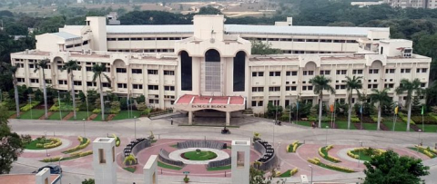

Main Building

MB
The Dr.M.G.R. Block is the heart and soul of VIT.
It includes the Chancellor’s Office, Admissions Office,
Finance Office, the Director of Student Welfare Office and
the International Relations Office which guide the students
in their academic journey at VIT.
Apart from these, it consists
of well-equipped classrooms and well-designed labs providing the
best facilities to students. One would also see the Dr. M Chenna Reddy Auditorium
( Capacity-469, Area-4885 sq. ft), and the Rajaji Hall (Capactiy-120, 1283 sq. ft. )
in the Main Building which are used for grand scale events and discussions.
The garden which is located at the centre adds aesthetic value and helps to
keep the atmosphere green and clean. The statue of ‘’Bharat Ratna’’ Dr. MGR unveiled
by Mr. Venkatraman, the Former President of India on 7th September 1998, earns the
building, its name – Dr. MGR Block. Since then this building has been the central to
all VITians. The Mail Building consists of 5 floors (Basement to Third Floor).